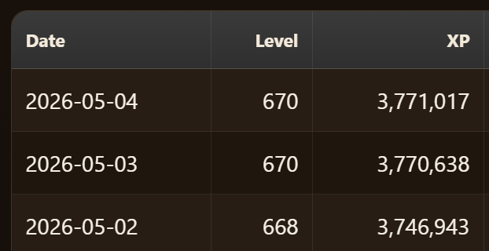

Stat Vault
Tracks DOTV progression from inside the game with current stats, daily history, raid activity, damage, levels, SP, milestones, public leaderboards, and cross-device sync. Access the in-game dashboard from the "Stat Vault" button on the in-game profile screen.